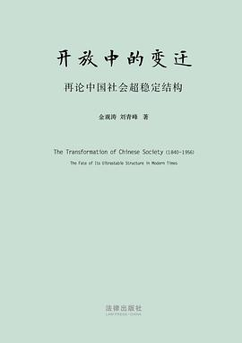

《开放中的变迁：再论中国社会超稳定结构》

总体观点
《开放中的变迁》是中国宏观历史哲学与思想史研究领域一座里程碑式的理论丰碑。作为八十年代名扬海内外的《兴盛与危机：论中国社会超稳定结构》的下篇，金观涛与刘青峰将控制论、系统论与深厚史料文献融为一炉，深入解答了“近代中国社会为什么没有自发演进出现代资本主义、而是在列强冲击下走向大崩溃与激进重构”的世纪李约瑟之谜。
作者以“意识形态（儒家道德观念）、政治结构（官僚集权帝国）与经济结构（自给自足小农经济）三位一体相互耦合”的系统论模型，透视了从鸦片战争、洋务运动、戊戌变法到辛亥革命的历史脉络。系统指出在外部现代文明的强力冲击下，传统子系统之间如何出现结构性失调；在军阀割据与思想大混乱的权威真空中，列宁主义动员型政党如何凭借全能意识形态完成了中国近代社会最壮烈的现代整合。
核心观点
-
1. 超稳定结构在外力冲击下的系统性脆断
两千年超稳定系统具备强大的自我修复与闭环吸纳能力，但当西方工业文明以坚船利炮强行凿开封闭国门时，该结构无法再通过简单的王朝改朝换代完成内卷循环。
鸦片战争不仅是一场军事失利，更直接击碎了传统华夷天朝大一统的宇宙观，导致中原王朝在近代国际法秩序面前陷入空前合法性危机。 -
2. “中体西用”的内在逻辑死结与洋务破产
洋务派试图在保留专制皇权与儒家纲常名教的前提下引进西方枪炮船舰，然而现代工业技术必须依托自由市场、专利法权与现代金融支撑，两者本质互不相容。
北洋舰队在甲午海战中的全军覆灭，标志着单纯依靠官僚买办引进装备、不进行现代国家制度改造的器物改良路线彻底破产。 -
3. 绅士阶层的溃决与基层社会的权威真空
1905年废除科举制度，直接切断了儒家知识分子通往官僚体制的合法晋升阶梯，传统士绅阶层迅速退化为地方土豪劣绅，导致广袤乡村社会陷入无序失控。
科举废除后乡村优秀青年成批出走大城市或投笔从戎，传统乡村失去德高望重的宗族裁决者，地方军阀与恶霸势力迅速填补权力真空。 -
4. 辛亥革命后的制度悬空与政治内卷
移植西方式议会民主与总统共和政体，在缺乏现代公民意识与中产阶级经济土壤的旧中国，瞬间沦为各路北洋军阀争夺地盘、贿选操弄宪法的政治玩偶。
曹锟贿选总统与张勋复辟闹剧，证明在缺乏强大社会组织整合力的前提下，形式上的民主宪政架构不可避免地滑向军阀混战深渊。 -
5. 现代动员型全能政党的诞生与重构整合
五四运动引入激进马克思主义意识形态，结合铁的纪律与严密支部组织，现代全能型政党成功将亿万底层农民动员组织起来，重构了现代大一统中央政权。
通过土地革命打破封建宗族土地制度，将党支部直接建立在连队和村庄之上，实现了中国历史上前所未有的超强社会动员力。
全书思维导图 · 知识脉络树
全书结构
-
第一章：超稳定系统在外部冲击下的失衡与解构
回顾超稳定结构三要素模型；鸦片战争至第二次鸦片战争期间，宗法一体化系统在西方工业文明外来冲击下最初的结构性震荡与裂痕。
剖析太平天国运动为何能席卷半壁江山：天主教教义异化为拜上帝教，猛烈冲击儒家皇权道统，凸显传统意识形态维稳功能的严重衰退。 -
第二章：洋务运动与器物层面的局部改革
洋务派官办、官督商办近代军工与民用工业实践；探讨“中体西用”意识形态如何成为既推动近代化又阻碍现代制度生长的双刃剑。
解析轮船招商局、江南制造总局在官僚腐败、特权垄断与西方列强资本夹击下的艰难挣扎，揭示制度瓶颈对经济活力的扼杀。 -
第三章：戊戌维新与清末新政：政治子系统的滞后改革
公车上书与戊戌变法；慈禧太后清末预备立宪、废除科举制；满汉贵族权力失衡与改良主义在专制惰性面前的彻底流产。
详析皇族内阁的设立如何让立宪派汉族士绅彻底心灰意冷，将体制内最温和的同盟者逼向革命党的反戈阵营。 -
第四章：辛亥革命、民初乱局与新文化运动的思想决战
清帝逊位与中华民国建立；议会政党政治的快速崩溃与军阀割据割裂；陈独秀、胡适发起新文化运动对封建礼教展开总清算。
鲁迅《狂人日记》用“吃人”二字直击两千年礼教虚伪内核，标志着中国知识阶层完成了对传统儒家超稳定意识形态的彻底决裂。 -
第五章：现代政党组织与大一统结构在二十世纪的重塑
国共两党以俄为师建立列宁主义动员型政党；国民大革命、土地革命至抗日战争，中国现代民族国家在战争与动员中完成制度重建。
系统总结：二十世纪中国通过用马克思主义重塑一体化意识形态、用现代政党重构官僚层级，最终完成了超稳定结构的否定之否定现代重建。